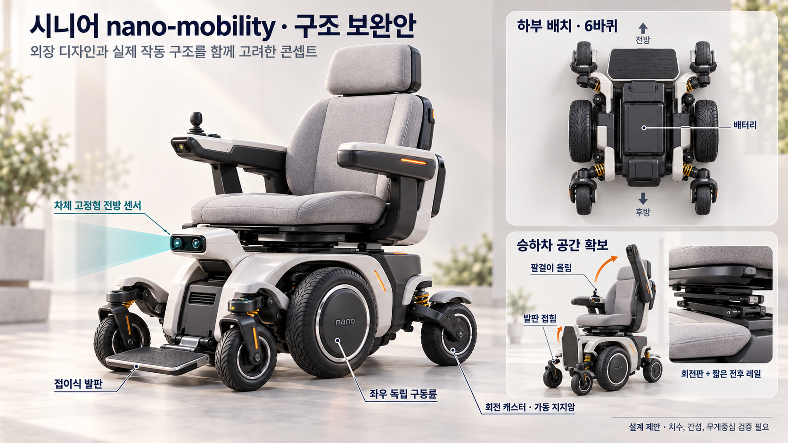
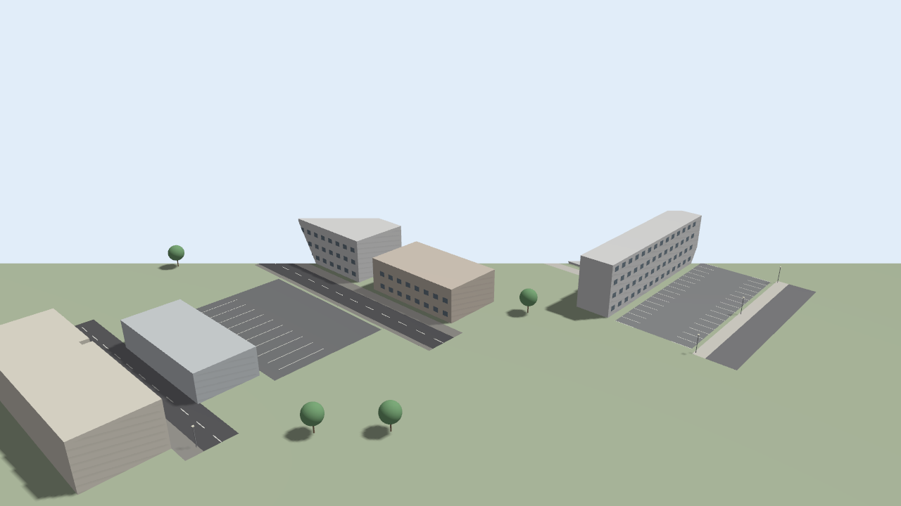
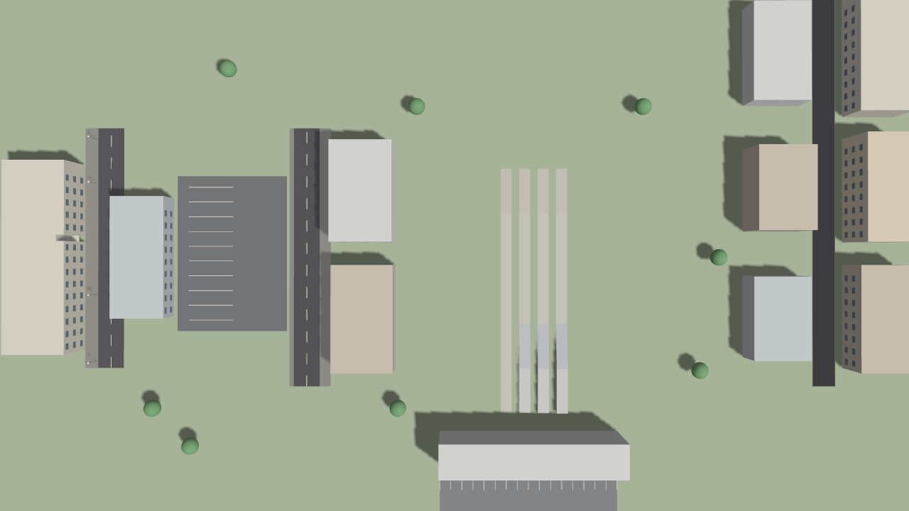
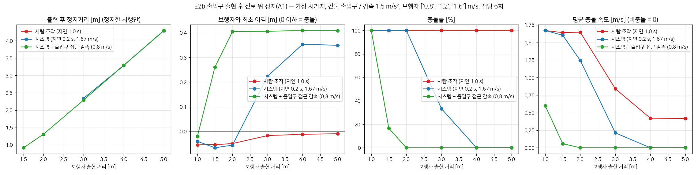

(주)다우테크놀로지
자율 안전
이동 플랫폼
범용 이동체 플랫폼, 사람이 늦게 반응해도
기기가 먼저 멈출 수 있도록
팀장 박지원 | 강성우 · 백송현
1. 플랫폼
6바퀴 구조 보완안

1
좌우 독립 구동륜
2
회전 캐스터 · 가동 지지암
3
승하차 팔걸이 올림, 발판 접힘
4
전방 센서 차체 고정형
확인 필요
치수 · 간섭 · 무게중심 검증
콘셉트 예시 이미지(외장 디자인과 작동 구조를 함께 고려한 설계 제안)
2
1. 플랫폼
플랫폼 구조: 공통 구동 베이스 + 용도별 상부 모듈
공통 베이스 (플랫폼)
어떤 상부를 얹어도
같은 안전정지 모듈
1
구동 6바퀴, 좌우 독립 구동륜(BLDC) + 앞뒤 캐스터
2
인식 전방 Depth 카메라, 후방 라이다, IMU
3
안전정지 제어 경고 → 감속 → 정지 → 우회, 경사·턱 보정
4
공통 제약 폭 1 m 이하, 최고 6 km/h, 보도 · 협소 공간
1차 · 탑승형
탑승형 좌석 모듈
좌석 평행이동·회전으로 승하차
고령·거동 불편 사용자, 0.5~2 km
확장 1
공유 · 라스트마일
단지·캠퍼스·대형 시설 안 짧은 이동
나인봇형 공유 플랫폼
확장 2
협소 공간 실내외 이동
복도·매장·통로 등 좁은 공간
폭 0.9 m, 제자리 회전
확장 3
무인 · 서비스 상부
카트·운반 등 사람이 타지 않는 용도
[기업체 협의 후 결정]
정리
제품 하나가 아니라 이동체 플랫폼 → 안전정지 모듈은 상부와 무관하게 공통
시뮬레이션 E1~E5는 공통 베이스 기준 · 상부 모듈 구성과 법적 분류는 기업체와 협의
3
2. 시뮬레이션
자율 안전 기능: 감지해서 멈추고, 알고 미리 대비한다
피드백 · 감지한 뒤 반응
사람이 늦게 반응해도
기기가 먼저 멈춘다
경고
감속
정지
우회
전방 Depth 카메라 · 후방 라이다로 사람·차량·턱을 감지
반응 0.2 s → 6 km/h에서 정지거리 약 1.3 m
사람 조작 반응 1.0 s → 약 2.6 m
피드포워드 · 알고 미리 대비
위험한 곳은 보이기 전에
미리 속도를 줄인다
출입구 · 차고지 출구 · 주차장 · 이면도로 진입 전에 0.8 m/s로 사전 감속
내리막 · 턱은 IMU와 Depth로 읽어 속도를 미리 낮춤
자동차가 터널 앞에서 창문을 미리 올리듯, 감지 후 반응만으로는 늦는 2~3 m 출현을 사전 대비로 막는다
원칙
언제든 수동 조작으로 전환 · 충돌 직전에는 시스템 정지가 우선
가정: 최고 6 km/h, 감속 1.5 m/s² (근거는 부록 18~19쪽) · 다음 장부터 가상 시가지에서 사람 조작 vs 기기 조작 영상
4
worlds/nanomob_town.sdf · scripts/generic_world.py 로 생성 · 구역 A~E 배치는 다음 장
5
2. 시뮬레이션
가상 시가지


특정 장소를 옮기지 않은 일반 시가지
보도·도로 폭, 주차면, 담장 높이를 일반값으로 둔 가상 환경. 실측 지도와 항공사진은 라이선스와 협업 범위가 정해진 뒤 적용
Gazebo Harmonic + ROS 2 Jazzy · 전방 Depth 카메라, 후방 라이다, IMU를 단 기기 모델(폭 0.9 m)로 주행
출입구·담장·주차 줄 위치, 도로 폭, 경사·턱 값은 현장 측량 전 가정값 · 상대 물체는 충돌 지오메트리 없이 기하학적으로 접촉 판정
6
2. 시뮬레이션
5개의 시나리오
가상 시가지 구역 및 시나리오
A
건물 출입구 · E2 보행자 돌발 출현
B
버스 차고지 출구 · E1 담장 틈으로 버스 진출
C
주차장 옆 보행로 · E3 주차면에서 차량 후진
D
폭 6 m 이면도로 · E4 보도 없는 길에서 뒤차 접근
E
경사·턱 시험 레인 · E5 내리막 0~12 %, 턱 3~12 cm
공통 조건
| 항목 | 값 |
|---|---|
| 기기 | 6 km/h (1.67 m/s), 폭 0.9 m · 길이 1.1 m |
| 감속도 | 1.5 m/s² (탑승자 한계 가정) |
| 반응 지연 | 시스템 0.2 s / 사람 조작 1.0 s |
| 센서 | 전방 Depth 6 m · 후방 라이다 12 m · IMU |
| 정지 제어 | 정지거리 예산 v·τ + v²/2a = d − 0.5 m |
| 도구 | Gazebo Harmonic + ROS 2 Jazzy |
| 총 시행 | 482회 (E2 216 · E1 60 · E3 60 · E4 54 · E5 92) |
7
2. 시뮬레이션
E2 출입구 보행자 · 영상
조건
건물 출입구에서 보행자 출현 3 m · 보행자 1.2 m/s로 진로를 가로질러 지나감 · 기기 6 km/h
사람 조작 (반응 1.0 s)
간신히 정지, 보행자와 이격 0.10 m
정지거리 3.18 m
시스템 (반응 0.2 s)
감속해 보행자를 보내고 통과
이격 0.44 m
시스템 + 사전 대비
여유 있게 통과, 이격 0.86 m
출입구 앞 0.8 m/s 사전 감속 (피드포워드)
8
2. 시뮬레이션
E1 버스 진출 · 영상
조건
차고지 담장 틈 · 버스 3 m/s(11 km/h) 진출 · 기기 6 km/h · 왼쪽 둘은 출현 4 m · 오른쪽은 2 m 출현 대비 설계
사람 조작 · 출현 4 m
충돌, 접촉 속도 0.54 m/s
1초 지연 동안 1.7 m 진행
시스템 · 출현 4 m
정지 후 버스가 지나가면 재출발
이격 0.37 m
2 m에서 나와도 멈추려면?
차고지 출구 앞에서 0.8 m/s로 미리 감속 → 정지거리 0.37 m
E2 영상과 같은 사전 대비(피드포워드) 원리
시스템 + 사전 대비 (설계)
차고지 출구 = 지도상 위험 지점
진입 전 0.8 m/s로 감속해 통과
9
2. 시뮬레이션
E3 차량 후진 · 영상
조건
주차장 옆 보행로 · 차량 2 m/s(7 km/h) 후진 · 기기 6 km/h · 왼쪽 둘은 출현 3 m · 오른쪽은 1 m 출현 대비 설계
사람 조작 · 출현 3 m
충돌, 접촉 속도 1.19 m/s
거의 감속하지 못한 채 접촉
시스템 · 출현 3 m
정지 후 차량이 지나가면 재출발
이격 0.40 m
주차 줄에 가려 1 m에서 나오면?
보행로 진입 전 0.8 m/s로 미리 감속 → 정지거리 0.37 m
시야 가림 구간은 사전 대비 + 경고음
시스템 + 사전 대비 (설계)
주차 줄 = 시야 가림 구간
진입 전 0.8 m/s + 경고음
10
2. 시뮬레이션
E4 이면도로 뒤차 접근 · 영상
조건
폭 6 m 이면도로 · 뒤차 18 km/h, 감지 시 간격 10 m · 기기 6 km/h · 오른쪽은 25 km/h 뒤차 조건 설명
무반응 (기준)
그대로 직진
뒤차가 0.05 m 옆으로 스침
후방 감지 시스템
길가로 붙고 1.0 m/s로 감속
추월 간격 0.66 m, 최소 이격 0.45 m
뒤차가 25 km/h로 오면?
라이다 12 m로는 길가로 붙을 시간이 모자란다
→ 후방 감지 20 m 이상 + 이면도로 진입 시 사전 감속
센서 요구 사양
감지거리가 설계 변수
시료 센서 선정 시 반영
11
2. 시뮬레이션
E5 내리막 경사 · 영상
조건
시험 레인 내리막 12 % · 보행자 출현 2.5 m · 기기 6 km/h · 제동 한계 2.0 m/s² 가정
시스템, 경사 보정 없음
충돌, 접촉 속도 1.13 m/s
가용 감속도 0.83 m/s²로는 부족
시스템 + 경사 보정 (IMU)
최고속도 1.29 m/s로 낮춰 정지
이격 0.22 m
왜 차이가 나나
내리막에서는 중력 성분만큼 쓸 수 있는 감속도가 줄어든다. 12 %에서는 2.0 → 0.83 m/s². IMU로 경사를 읽어 정지 예산에 넣으면 속도를 미리 낮춘다
정리
경사 보정 = 속도 자동 하향
평지와 같은 이격 유지
12
2. 시뮬레이션
E5 보도 턱 3 cm · 영상
조건
시험 레인 보도 턱 3 cm · 기기 6 km/h로 접근 · 캐스터 지름 18 cm
무반응 (기준)
1.67 m/s 그대로 넘음
충격 큼
시스템 + 턱 인식
1.0 m/s로 감속해 통과
Depth 카메라로 턱 높이 측정
턱 통과 속도 스윕
3 cm 턱은 0.6·0.8 m/s에서는 걸리고 1.0 m/s부터 넘는다. 그래서 3.5 cm 이하 턱은 1.0 m/s로 통과하도록 정했다
정리
3 cm 통과 속도 = 1.0 m/s
더 느리면 걸리고, 전속력은 충격
13
2. 시뮬레이션
E5 보도 턱 5 cm · 영상
조건
시험 레인 보도 턱 5 cm · 기기 6 km/h로 접근 · 캐스터 지름 18 cm
무반응 (기준)
턱에 걸려 멈춤
1.4 m/s까지 올려도 못 넘음
시스템 + 턱 인식
턱 앞 0.30 m에서 정지
우회 필요
설계 반영
캐스터 지름 18 cm로는 5 cm 턱을 넘지 못한다. 5 cm 이상은 정지 후 우회하거나, 캐스터 지름을 키우는 설계 검토가 필요하다
정리
5 cm 이상 = 정지 후 우회
캐스터 지름 재검토
2. 시뮬레이션
시나리오 결과
상황
시스템 (반응 0.2 s)
사람 조작 (반응 1.0 s)
E2
출입구 보행자 출현
보행자가 나와 진로에 멈춤
4 m 이상에서 나타나면 충돌 0 %
사전 대비(0.8 m/s)면 2 m 이상이면 0 %
5 m에서 나와도 충돌
E1
버스 진출
차고지 담장 틈에서 버스가 나옴
4 m 이상에서 나타나면 충돌 0 %
정지 후 버스가 지나가면 재출발
6 m에서도 67 % 충돌
E3
주차장 후진 차량
주차 줄에 가려진 차가 후진
6 m 이상에서 나타나면 충돌 0 %
3~4 m는 33 % 충돌 (시야 가림)
6 m에서도 33 % 충돌
E4
이면도로 뒤차 접근
보도 없는 길, 뒤차 18 km/h
길가로 붙어 이격 0.05 → 0.39 m
25 km/h 뒤차는 라이다 12 m로 부족
이격 0.21 m, 25 km/h는 충돌
E5
내리막 경사 · 보도 턱
경사 0~12 %, 턱 3~12 cm
12 % 내리막에서 속도 자동 하향, 이격 유지
3 cm 턱 통과, 5 cm 이상은 턱 앞 정지
모든 경사에서 충돌, 5 cm 턱 걸림
출현 거리 = 보행자·차량이 나타나는 순간 기기와의 거리 (가까울수록 위험) · 총 482회 시행 · 자세한 수치는 부록 21~24쪽
14
2. 시뮬레이션
설계 반영점 6가지
1
반응 지연을 정지 예산에 포함
0.2 s와 1.0 s의 차이가 충돌률 차이로 그대로 나타남
2
위험 지점 사전 대비 (피드포워드)
안전 출현거리 4 m → 2 m, 가려진 곳은 정지만으론 부족
3
측면 접근 차량 예측
담장·주차 줄 뒤 차량은 직전에야 보임 → 위치 기반 감속
4
후방 감지거리 확대
라이다 12 m는 18 km/h까지, 25 km/h 대응은 20 m 이상
5
경사·턱에 따른 속도 제한
12 % 내리막 1.29 m/s, 턱 3 cm 통과 · 5 cm 이상 정지
6
시뮬레이션의 한계
치수는 가정값, 센서 열화 미반영 → 실측 후 재실행
결론
"사람이 늦게 반응해도 기계가 먼저 멈춘다" — 다섯 시나리오 모두에서 확인
센서 위치·캐스터 지름 영향은 별도 민감도 실험 결과
15
부록
Appendix
17
사용 현황 · 니즈 (고령 보행 사고, 외출 불편)
18
정지거리 비교: 시스템 vs 사람
19
정지거리 가정치의 근거
20
구성과 설계 제약
21
E2 출입구 보행자 · 수치
22
E1 버스 진출 · E3 차량 후진 · 수치
23
E4 이면도로 뒤차 접근 · 수치
24
E5 내리막 경사 · 보도 턱 · 수치
16
부록
시니어 보행 사고와 이동 불편
문제 · 사고 현황
20.43%
서울 65세 이상 인구 비중 (2025)
67.0%
보행 사망자 중 65세 이상 (2024, 920명 중 616명)
56.2%
고령 보행 사망 중 횡단 중 발생
니즈 · 이동 공백
56.6%
65세 이상 외출 불편 (2023, 10,078명)
약 15만
서울 70세 이상 면허 반납 누적 (2025년 한 해 32,095명)
35.5%
전동보장구 이용자 사고 경험 (2016 조사)
정리
가장 급한 시니어부터, 누구나 안전하게 근거리를 이동하는 기기
행정안전부 2025 주민등록 · 한국교통안전공단 · 2023 노인실태조사 · 한국소비자원(2016)
17
부록
정지거리 비교: 시스템 vs 사람
시스템
약 1.3m
반응 0.2초
사람
약 2.6m
반응 1초
가정치: 6km/h(약 1.7m/s), 감속 1.5m/s²
1
줄일 수 있는 사고
기기가 접근하다 생기는 충돌
(사람 출현 · 차량 진출 · 뒤차 접근)
2
한계와 대응
정지한 기기를 차량이 들이받는 경우:
경고 · 가장자리 이동으로 완화, 시뮬레이션 검증
직접 계산한 가정치 · 네 값을 정한 기준은 다음 장
18
부록
정지거리 가정치는 이렇게 정했다
6 km/h
기기 최고속도
빠른 걸음 속도 · 식약처 기준의 경계 속도 ⑥
0.2 s
시스템 반응 지연
카메라 1프레임 + 판단 + 제동 응답을 넉넉히 합친 값
1.0 s
사람 반응 지연
실제 고령 운전자 1.3~2.3 s보다 빠르게 잡은 값 ①②③
1.5 m/s²
감속도
대중교통 상용 제동의 상한 · 2.0부터는 승객이 못 견딤 ④⑤
유의
네 값 모두 가정값 → 센서·기기 확정 후 실측해서 재검증
정지거리 = v·τ + v²/2a
출처 ① FHWA 고령 운전자 반응시간 ② 국내 운전자 반응시간 ③ 고령자 돌발 반응 ④ 철도 가감속 범위 ⑤ 승객 허용 감속 ⑥ 식약처 동력보조장치 기준
19
도로교통법 시행규칙 제2조(폭 1 m 이하) · 법적 분류는 기업과 협의 후 확정
20
부록
구성과 설계 제약
정리
차체 폭 1 m 이하 고정이 6륜 차체 설계의 관건
구성
1
구조
6바퀴, 좌우 구동륜(BLDC) + 앞뒤 캐스터
2
편의
좌석 평행이동·회전, 팔걸이 올림, 발판 접힘
3
인식
전방 Depth 카메라(차체 고정), 후방 라이다
4
제어
감지 → 판단 → 모터 제어 → 피드백
제약
1
차체 폭
1 m 이하 (보도 · 협소 공간 주행)
2
속도
최고 6 km/h, 보도 주행 전제
3
분류
보도 주행 가능 분류 (기업과 협의)
4
확인 필요
비장애 사용자 적용, 센서 유효거리, 무게중심
부록
E2 출입구 보행자 · 결과
사람 조작 (지연 1.0 s)
5 m도 충돌
진로에 멈추는 보행자는 전 구간 충돌, 지나가는 경우만 4 m 이상에서 0 %
시스템 (지연 0.2 s)
4 m
4 m 이상이면 충돌 0 %, 3 m는 33 %, 2 m 이하는 100 %
시스템 + 출입구 사전감속 0.8 m/s
2 m
2 m 이상이면 0 %, 1.5 m는 17 %, 충돌해도 접촉 속도 0.6 m/s 이하

E2b 배치 108회 · 보행자 0.8 / 1.2 / 1.6 m/s, 출현 후 진로 위 정지 · 점당 6회 평균 · 출현 2~3 m는 반응만으로 부족, 출입구 앞 사전감속이 핵심
21
부록
E1 버스 진출 · E3 차량 후진 · 결과
E1 · 차고지 담장 틈에서 버스 진출 (버스 1.5~5 m/s)
| 출현 거리 | 1 m | 2 m | 3 m | 4 m | 6 m |
|---|---|---|---|---|---|
| 사람 조작 | 100 % | 100 % | 100 % | 67 % | 67 % |
| 시스템 | 100 % | 67 % | 17 % | 0 % | 0 % |
시스템은 4 m 이상이면 충돌 0 %, 사람은 6 m에서도 67 %
정지 후 버스가 지나가면 재출발. 담장 뒤 버스는 진로에 들어오기 직전에야 카메라에 보이므로 측면 접근 예측이 필요하다.
E3 · 주차면에서 차량 후진 출현 (후진 1~3 m/s)
| 출현 거리 | 1 m | 2 m | 3 m | 4 m | 6 m |
|---|---|---|---|---|---|
| 사람 조작 | 100 % | 100 % | 83 % | 67 % | 33 % |
| 시스템 | 100 % | 100 % | 33 % | 33 % | 0 % |
시스템은 6 m 이상이면 충돌 0 %, 3~4 m는 33 % 충돌
주차 줄이 시야를 가려 1~2 m 출현은 시스템도 피하지 못한다. 주차장 옆 보행로에서는 사전감속과 경고음이 함께 필요하다.
E1 60회 · E3 60회, 출현 거리 5단계 × 상대 속도 3단계 × 2회 · 상대 차량은 기하학적 접촉 판정
22
부록
E4 이면도로 뒤차 접근 · 결과
뒤차 18 km/h (5 m/s) · 추월 시 차량과 최소 이격
무반응
0.05 m
사람 조작
0.21 m
시스템
0.39 m
| 뒤차 속도 | 무반응 | 사람 조작 | 시스템 |
|---|---|---|---|
| 11 km/h (3 m/s) | 0.05 m | 0.70 m | 0.77 m |
| 18 km/h (5 m/s) | 0.05 m | 0.21 m · 충돌 1/3 | 0.39 m |
| 25 km/h (7 m/s) | 0.05 m | 0.00 m · 충돌 2/3 | 0.15 m · 충돌 1/3 |
1
동작 후방 라이다가 접근 차량을 추적하면 길 가장자리로 붙고 감속·정지, 통과 후 재출발
2
효과 18 km/h 뒤차에서 이격 0.05 → 0.39 m, 사람 조작은 충돌이 나는 조건에서도 시스템은 충돌 0
3
한계 25 km/h 뒤차는 라이다 12 m 사거리로는 붙을 시간이 부족해 간격 6 m 조건에서 충돌. 방향을 틀면 뒷모서리가 차선 쪽으로 쓸리는 점도 확인
설계 반영
후방 감지거리 확대(20 m 이상)와 이면도로 진입 시 사전감속, 운전자에게 보이는 경고등
E4 54회 · 기기가 진로 쪽에 있는 경우(길가 위치 1.5 m), 트리거 시 뒤차 간격 6 / 10 / 25 m 평균 · 무반응 기준은 그대로 직진
23
E5a 48회 (경사 4단계 × 출현 4단계 × 3 프로필) · E5b 24회 + 속도 스윕 20회 · 캐스터 지름 18 cm, 마찰 0 구체로 단순화
24
부록
E5 내리막 경사 · 보도 턱 · 결과
E5a · 내리막에서 보행자 출현 3.5 m, 보행자와 최소 이격
| 경사 | 0 % | 5 % | 8 % | 12 % |
|---|---|---|---|---|
| 사람 조작 | 충돌 | 충돌 | 충돌 | 충돌 |
| 시스템, 보정 없음 | 0.34 m | 0.33 m | 0.22 m | 충돌 |
| 시스템 + 경사 보정 | 0.36 m | 0.33 m | 0.30 m | 0.36 m |
12 % 내리막에서 최고속도 1.67 → 1.29 m/s 자동 하향
제동 한계 2.0 m/s² 가정 시 내리막 가용 감속도는 12 %에서 0.83 m/s²로 줄어든다. IMU 경사를 정지 예산에 넣으면 이격이 평지와 같게 유지된다.
E5b · 보도 턱 통과 결과 (기기 1.67 m/s 접근)
| 턱 높이 | 3 cm | 5 cm | 8 cm | 12 cm |
|---|---|---|---|---|
| 무반응 | 통과 | 걸림 | 걸림 | 걸림 |
| 시스템, 턱 인식 없음 | 통과 | 걸림 | 걸림 | 턱 앞 정지 |
| 시스템 + 턱 인식 | 1.0 m/s 통과 | 턱 앞 정지 | 턱 앞 정지 | 턱 앞 정지 |
3 cm는 1.0 m/s 이상이어야 넘고, 5 cm는 캐스터 18 cm로는 불가
턱 통과 속도 스윕: 3 cm는 0.6·0.8 m/s에서 걸리고 1.0 m/s부터 통과. 5 cm는 1.4 m/s까지 전부 걸려 5 cm 이상은 정지·우회가 답이다. 턱 앞 정지 거리 0.24~0.30 m.